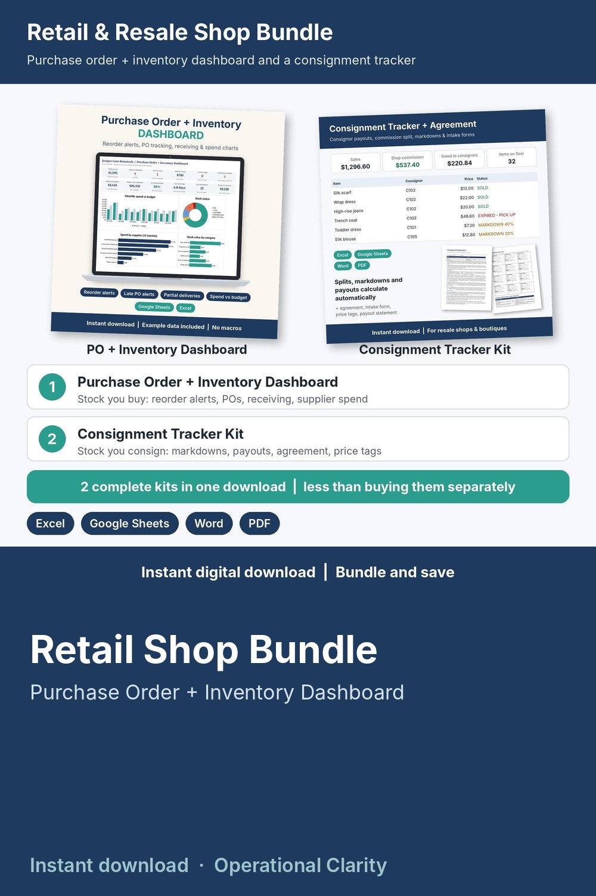

Retail Shop Bundle

Two inventory kits for shops that buy stock from suppliers AND take items on consignment, in one download for less than buying them separately: a Purchase Order + Inventory Dashboard and a Consignment Tracker with payout calculator.
WHAT'S INSIDE
- Purchase Order + Inventory Dashboard (Excel / Google Sheets, 10 tabs):
* DASHBOARD with 12 KPI tiles and 4 charts (monthly spend vs budget, stock status, spend by supplier, stock value by category), a REORDER NOW list and a LATE + DUE SOON list
* Inventory with reorder alerts: on hand, on order, days of stock, run-out date and the exact quantity to order
* PO Log with LATE / DUE SOON alerts, Receiving Log for partial and damaged deliveries, Stock Out Log, Suppliers scorecard, Monthly Spend vs budget, printable Purchase Order
* START HERE guide (PDF): 20-minute setup and a 10-minute weekly routine
- Consignment Tracker Kit:
* Consignment Tracker & Consignor Payout Calculator (Excel / Google Sheets): consignors with their own split, every item on the floor, automatic markdowns by days in shop, sales, payouts due and a one-click payout statement
* Word + PDF: consignment agreement, consignor intake and inventory schedule, printable price tags, payout statement and pickup release
* START HERE guide
- Bundle START HERE guide (PDF) that tells you where to begin
HOW IT WORKS
1. Stock you buy goes in the Dashboard: fill in Settings, Suppliers and Inventory, then log each PO, delivery and sale. The DASHBOARD tells you what to reorder and which orders are late.
2. Consigned items go in the Consignment Tracker: add consignors and items at drop-off; markdowns and payouts calculate.
3. Print the payout statement or a purchase order whenever you need one.
Example data shows how everything connects; delete it and type your own. Yellow cells = type here, green cells = calculated. No macros.
BEST FOR
Boutiques, resale and consignment shops, gift shops, vintage sellers and online shops.
FORMATS
- Excel .xlsx (works in Excel and Google Sheets)
- Word .docx (edit in Word, Google Docs, Pages or LibreOffice) + PDF, US Letter
This is an instant digital download, no physical item will be shipped.
Editable templates, not legal or tax advice: have the consignment agreement reviewed by a local attorney.